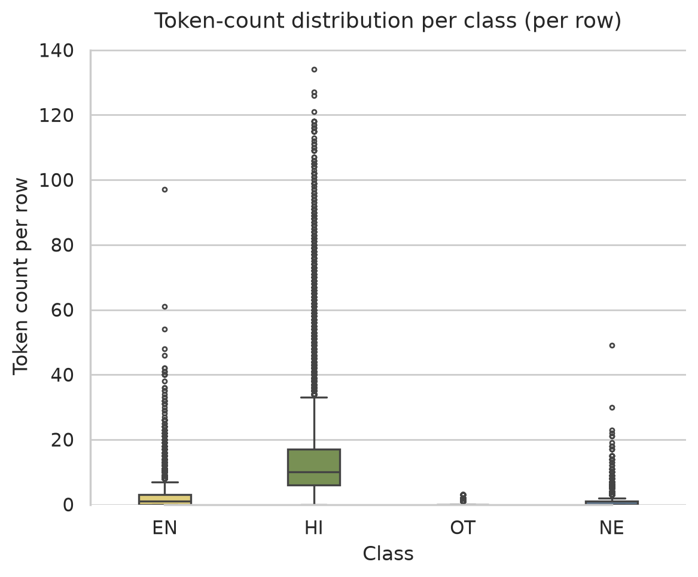
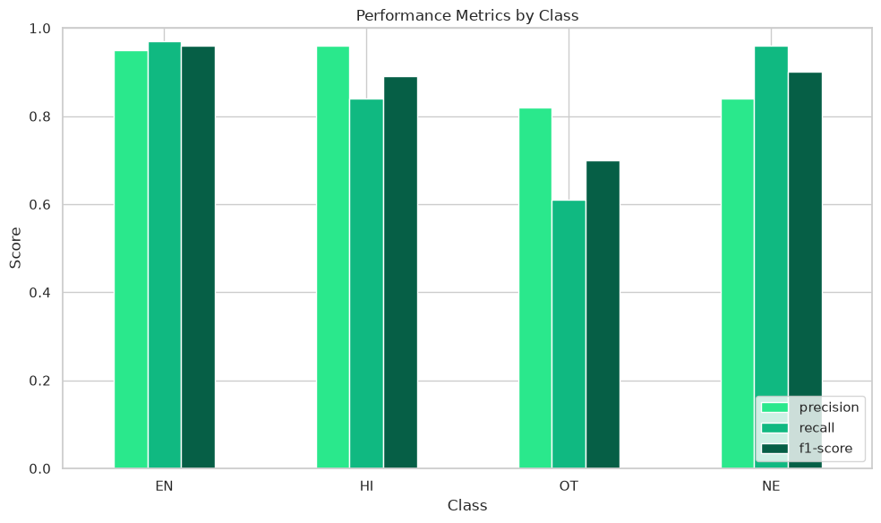
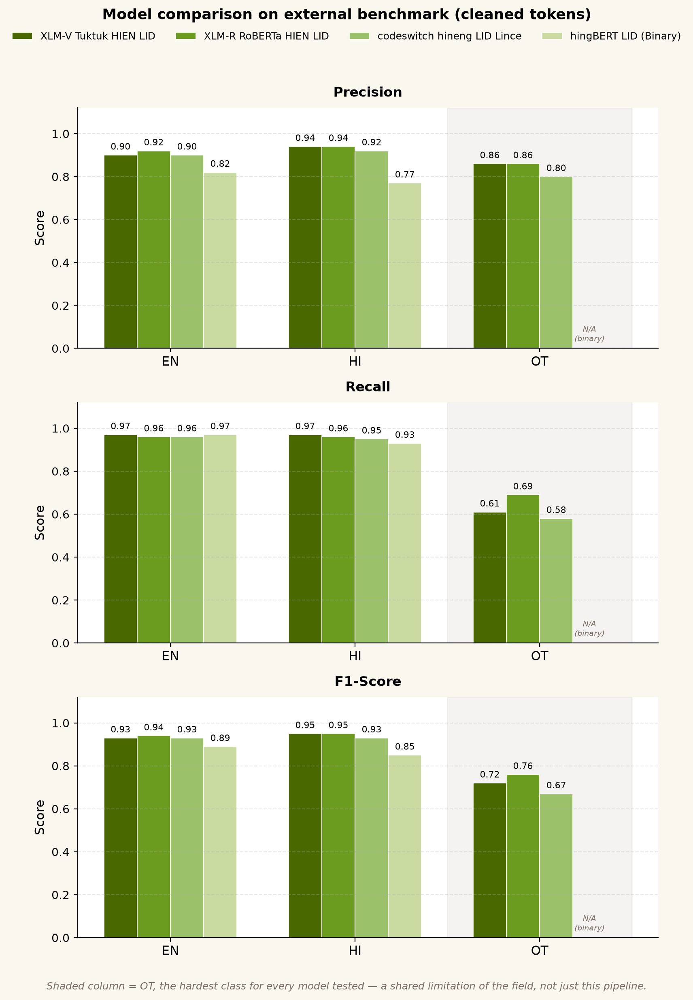

Log Date: --.--.---- // EXP_02
§ 01 — Executive Summary
This report covers a token-level language-identification experiment on code-mixed Hinglish social text — Roman-script comments where Hindi and English share a line and sentence-level LID mislabels tokens. Scope: ~30k rows of raw Roman-script hinglish comments I scraped myself, four label classes, pseudo-labels produced by a 3-model majority-vote ensemble (Fleiss' κ ≈ 0.65 across voters) rather than a human-annotated pass; the aim is to produce a specialized LID model in this fairly scarce NLP sub-problem space. After majority-vote labeling, I fine-tuned facebook's XLM-V Base into XLM-V-Tuktuk-HIEN-LID and treated the whole path — collection quirks, filtering, cleaning, preprocessing, annotation, quality assurance, train/eval splits — as part of the deliverable.
Beyond the holdout test set — which shares the same pseudo-labeling pathway as training data, so I treat it as a sanity check rather than proof of generalization — external LinCE-style benchmarks (§08), with inputs cleaned the same way at inference, are where any claim lives: Tuktuk sits close to a larger specialized XLM-R LID model on macro F1 (0.87 vs 0.88) when the data passes through the same cleaning pipeline — a modest result, not a zero-shot win over the field. Methodology, metrics, and failure modes are in §03–§08; §09 lists access links and what I'd tackle next.
Task
Token-level code-mixed Hinglish LID
Data
~30k rows · self-collected
Prep env
Spore, Kaggle notebook
Base Model
XLM-V Base
Hardware
Ryzen 7 5800H · 16GB RAM
Field Report Index
Nine sections.
§ 02 — Problem Statement
Hinglish — Hindi-English code-switching in Roman script — is one of the most common registers in South Asian social media text, and that text is chaotic by nature: slang, typos, platform shorthand, tone that shifts mid-sentence. Moderation and toxicity filters, sentiment scoring, spam routing, search and query understanding, TTS, machine-translation preprocessing, ad/language routing, and monolingual NER/POS taggers all need to know which language each token is — a single sentence-level label can't tell them that.
Why token-level
A lightweight token-LID layer sits early in a pipeline, before heavier task models run. Downstream, it decides: which toxicity or abuse lexicon applies per token, which sentiment lexicon to route through, which TTS phonetics to use, how to expand or spell-correct a search query, where to segment code-mixed text before MT, and which tokens a monolingual tagger should even see.
Why sentence-level fails
Sentence-level LID collapses a mixed utterance into one majority-vote label. One embedded English word inside a nine-word Hindi comment gets swallowed — tagged Hindi, then routed into a monolingual Hindi pipeline with no idea what to do with that token. Code-switching is the norm in Hinglish social text, not an edge case — so sentence-level LID is systematically wrong on real input, and it fails silently.
Why this sub-problem is hard
Token-level Hinglish LID sits in a genuinely scarce sub-space: sentence-level models exist, but open token-level checkpoints are still rare, and infra for Indian-language NLP is patchy — gated releases, brittle docs, inconsistent tagsets. On top of that: lexical ambiguity (main as Hindi "I" vs. English "main"), non-standard Roman transliteration (kal / kaal / kall), English loanwords inside Hindi grammatical frames, and script mixing in the wild — this corpus is Roman-only by design (LINCE eval in §08 collapses OT+NE into a 3-class tagset). Labeled corpora at this granularity are scarce enough that weak supervision became the honest path forward — pseudo-label vote detailed in §05.
WordPiece / subword alignment
BERT-style tokenizers split Roman Hindi below the word — yaar becomes ya + ar. Mapping subword predictions back to whitespace-level tokens is its own alignment step; get it wrong and labels drift silently, with no error to signal it.
failure mode · baseline code-switch
failure mode · lexical ambiguity (main / main)
failure mode · named entity amid mix
failure mode · English loan in Hindi frame
Gold labels shown here teach the schema — the model disagrees with at least one of these in practice; see §08 for evaluation.
Corpus size and scrape log → §03.
§ 03 — Dataset Provenance
About 30k raw code-switch Roman-script hinglish social media comments collected from five different social media platforms; each has its own scraper notebook in utility/. After deduplication, empty-row drops, and text cleaning, the dataset was reduced to ~28,333 rows.
Used reddit's public .json API endpoint. It was the most reliable volume. The only issue was that this method was prone to hitting 429 rate limits but was easy to work around.
Twitter / X
This was the hardest to scrape. Twitter had expensive API based options, and twitter also had strong bot detection mechanisms, normal selenium was not working. So after some trial and error, I came across undetected_chromedriver + selenium_stealth
Facebook · Instagram · YouTube
These 3 were fairly similar to each other. All of these were scraped using base selenium, youtube was the simplest of these 3 as I did not have to deal with login issues. For the other 2 I had to login in order to get the comments, and in the case of instagram the scroll was breaking again and again so I had to manually scroll to the bottom of the page.
Considered, then dropped
Telegram
Looked at a Telethon-based collector for channel/group comments, but dropped it (coverage, stability, and dataset consistency).
Briefly considered when suggested, but excluded — private / invite-only data does not belong in this corpus, also most of the data was conversational in nature.
| Platform | Notebook (utility/) |
|---|---|
| reddit scraper.ipynb | |
| Twitter / X | twitter scrapper.ipynb |
| facebook scrapper.ipynb | |
| Instagram scrapper.ipynb | |
| YouTube | Youtube scrapper.ipynb |
§ 04 — Preprocessing Pipeline
After collecting and initial-filtering for Hinglish code-mixed text, the raw corpus went through a single cleaning notebook, Hinglish_data_preprocessing.ipynb, before any labeling started.
Step 1
Load & initial check-up - loaded the combined collected dataset into a single csv file. It was labeled by my senior previously as this set was used for multiple projects. The set included 2 additional columns preprocess_text and lables; First ran the basic data quality checks and processed nulls and duplicates and then took a sample of 100 rows for quality inspection.
Step 2
Drop unreliable columns — the supervisor's pre-processed text and labels had quality issues; so decided to drop both, then clean the set and rebuilt labels from the raw text column only.
Step 3
Audit sample — After the initial setup. I pulled a 100-row sample before cleaning, saved separately, to compare raw vs. cleaned text after the fact. This was done to keep the iterative nature of data cleaning and preprocessing in mind, some anomalies can be introduced in the cleaning process.
Step 4
Text normalize — clean_hinglish_text(): HTML entity/tag strip, stripping invisible zero-width characters, normalizing full-width spaces, decomposing and stripping diacritics, merging compound hyphenated words (T-Rex -> TRex or don't -> dont) cause having (T Rex) would have been noisy for the model, URL/hashtag removal, diacritic stripping, non-Latin/emoji/digit removal, lowercasing, repeated-character and keyboard-laughter squashing.
Step 5
Non-Hinglish filter — hand-built Romanized-Bengali (Banglish) stopword detector to catch and drop comments that weren't actually Hindi-English, despite passing platform/keyword collection filters, then went through the dataset with my eyes and caught urdu in hinglish format in a section, removed that section too.
Step 6
Length filter — computed whitespace-token count per row; dropped ≤2 or ≥144 tokens. Keeps padding/compute sane on CPU with minimal row loss.
Step 7
Final corpus — ~28,333 rows, took the sample of the cleaned set and audited it against the raw sample, ran this test 3-4 times before moving on and handed off to the 3-model ensembled pseudo-labeling stage (§05).
§ 05 — Labeling (weak supervision)
With the corpus cleaned, manual token-level annotation of ~28k rows wasn't realistic solo — no annotation team, no budget for one. Instead, I ran three existing Hinglish LID models over the full dataset and took the majority vote per token, treating disagreement between them as a proxy for annotation difficulty. Before trusting the output, I measured how much the three models actually agreed with each other — weak supervision built on top of poor agreement just launders bad labels through extra steps rather than fixing anything.
Pseudo-labeling — 3-model voting
Finding three models for the ensemble was harder than expected. Sentence-level LID models are common, but token-level ones are sparse, and Hinglish-specific token-level LID models sparser still. I ended up with three models trained on different sources with different label schemes — a real advantage for voting (independent errors), but it meant mapping three separate tagsets onto one shared schema before any voting could happen.
| Source | Model | Role |
|---|---|---|
| 1 | HingBERT-LID | Binary EN/HI · WordPiece pain · weak voter |
| 2 | XLM-RoBERTa-HIEN-LID | 8-class → mapped to EN/HI/NE/OT |
| 3 | codeswitch-hineng-lid-lince | Dictionary pivot → LinCE-trained CodeSwitch |
Voting rules
3/3 agree → accept. 2/3 → accept majority. Full 3-way disagreement → row kept, not dropped (production input will look like this too); ties on the EN/HI axis broken by HingBERT — its binary scheme means it has no vote to offer on NE/OT ties, so those fall back to majority-of-the-two-remaining-models by default. NE was given override priority when predicted by any single model — a deliberate recall-over-precision choice, but one that inherits XLM-R's known tendency to over-predict NE (measured separately at 1.00 recall / 0.82 precision on external eval), so some share of NE labels here likely reflect one model's opinion rather than true 3-way consensus. Confidence scores weren't saved at labeling time, so weighted voting is deferred to v2.
Inter-annotator agreement (pseudo-labelers)
| Metric | Value |
|---|---|
| Tokens evaluated | 456,642 |
| HingBERT vs XLM-R κ (Cohen's) | 0.550 |
| XLM-R vs CodeSwitch κ (Cohen's) | 0.862 |
| HingBERT vs CodeSwitch κ (Cohen's) | 0.549 |
| Mean pairwise Cohen's κ | 0.654 |
| Fleiss' κ (global) | 0.650 |
| Krippendorff's α (global) | 0.648 |
κ ≈ 0.65 across every measure is moderate agreement, not high — and the fact that Fleiss' κ and Krippendorff's α land within 0.002 of each other, despite being computed differently, at least confirms the disagreement is real signal, not a quirk of one metric's assumptions. HingBERT is the clear drag on every pairwise score it's part of (0.550, 0.549) against XLM-R/CodeSwitch's 0.862 — expected, since it's binary in a 4-class task and structurally can't agree beyond the EN/HI axis. Proceeded anyway, given how few token-level Hinglish LID models exist to triangulate against at all — stated here rather than smoothed over.
Train / holdout split
~27,333 rows fine-tuning · 1,000-row holdout (random_state=42) reserved for evaluation — labels kept for scoring but excluded from training.
This holdout shares the same pseudo-labeling pathway as training data, so it measures model-vs-ensemble agreement, not independent ground truth. External benchmark results (§08) carry the real generalization claim.
§ 06 — Data Quality & QA
Once voting resolved every token's label, the dataset was ready for fine-tuning. Here's the resulting distribution and holdout composition.
Class distribution (token counts per row)
| Class | Typical share | Notes |
|---|---|---|
| EN | dominant | English tokens common in Roman Hinglish |
| HI | high | Romanized Hindi; carries most of each comment's grammatical backbone |
| NE | moderate | Names, places — given override priority in voting (§05); some share reflects one model's tendency to over-predict this class, not full consensus |
| OT | rare (~<1%) | Ambiguous / non-linguistic tokens — hardest class, lowest recall in evaluation (§08) |

Holdout token support (1k rows · 2,429 tokens)
| Class | Support |
|---|---|
| EN | 1,209 |
| HI | 728 |
| OT | 23 |
| NE | 469 |
Same 1k-row holdout reported in §08 — token support for the sanity-check metrics. Labels come from the same pseudo-label vote as training, so this is model-vs-ensemble agreement, not independent gold; LINCE carries the external claim.
Noise handled
HTTP links stripped, spam/boilerplate reduced via keyword filters at scrape time, duplicates and nulls removed in §04.
§ 07 — Model & Fine-tuning
With the dataset ready, I fine-tuned Qwen 3.5 0.8B first.
Initial model — Qwen 3.5 0.8B
Qwen 3.5 0.8B — a large language model, chosen initially for being lightweight at 0.8B parameters, with strong reported Hinglish performance for its size, and fairly recent.
Model specification — Qwen/Qwen3.5-0.8B
| Spec | Value |
|---|---|
| HF id | Qwen/Qwen3.5-0.8B |
| Type | Causal LM (hybrid Gated DeltaNet + attention) |
| Parameters | 0.8B |
| Layers | 24 |
| Hidden dim | 1024 |
| Vocab (padded) | 248,320 |
| FFN intermediate | 3584 |
| Context length | 262,144 natively |
| Task setup here | Token classification head · 4 labels (HI/EN/OT/NE) |
Training experience — Qwen attempt
Training moved from Spore to a Kaggle notebook — no local hardware capable of fine-tuning. Kaggle's free tier gives 12 hours/session, 30 hours/week, with 2×T4 or 1×A100. I used 2×T4 with torchrun for distributed training, Unsloth + LoRA, fp32 weights (T4 doesn't support bf16). Tuned hyperparameters and DDP settings cut training time from ~30 hours to ~10.
Across two iterations, training loss settled around ~0.042 with eval loss around ~0.089 — gradients stayed stable, so I let both runs finish the full 10 hours. But at test time, the final model hallucinated outputs and failed to generalize to the holdout set.
Third iteration — switching to XLM-V
After Qwen's hallucination failure, I switched to facebook/xlm-v-base — an encoder built for token classification, not a decoder LM repurposed for it, and specifically designed to give under-served languages (Hindi included) better subword coverage than XLM-R's shared 250K vocabulary. Rather than another LoRA adapter, this run does a full-parameter fine-tune.
Model specification — facebook/xlm-v-base
| Spec | Value |
|---|---|
| HF id | facebook/xlm-v-base |
| Type | XLM-RoBERTa architecture, encoder |
| Layers | 12 |
| Hidden dim | 768 |
| Attention heads | 12 |
| FFN intermediate | 3072 |
| Vocab | 901,629 (full XLM-V vocabulary, not pruned per-language) |
| Task setup here | Token classification head · 4 labels (HI=0, EN=1, OT=2, NE=3) |
Training experience — XLM-V / Tuktuk
Full fine-tune, single T4 GPU — 13.9GB VRAM used, made possible by 8-bit Adam (adamw_8bit) to shrink optimizer-state memory, gradient checkpointing, and micro-batch 1 with 32-step accumulation (effective batch size 32). Training loss landed around ~1.9, eval loss around ~0.086, over ~2.4 hours.
The gap between train and eval loss here runs the opposite direction from the usual pattern — worth a second look at the loss curve rather than the two endpoint numbers alone before treating it as settled, but gradients were stable throughout and the model went on to perform well on held-out and external evaluation (§08), unlike the Qwen attempt.
Model selection during training used seqeval's F1 (via metric_for_best_model); this differs from the token-level classification_report F1 used for all reported results in §08 — the former picked the checkpoint, the latter is what's actually being claimed.
Final model — XLM-V-Tuktuk-HIEN-LID
XLM-V-Tuktuk-HIEN-LID — token classification head, 4 labels (HI=0, EN=1, OT=2, NE=3).
Private HF repo: speedy383079/XLM-V-Tuktuk-HIEN-LID.
| Setting | Value |
|---|---|
| Base | facebook/xlm-v-base |
| Task | Token classification, full fine-tune |
| Train rows | ~27,333 |
| Val / holdout | 1,000 rows |
| Weight format | fp32 |
| Effective batch size | 32 (micro-batch 1 × 32 accumulation steps) |
| Optimizer | adamw_8bit |
| Learning rate | 2e-5, 100 warmup steps |
| Epochs | 3 |
| Train hardware | Kaggle's 1× T4 GPU |
| Train time | ~2.4 hours |
Postmortem
Hard constraints
No local GPU (house fire). Pseudo-labels instead of gold annotation. Severe OT class imbalance. CPU-only labeling on 456k+ tokens.
Regret — Qwen first
Qwen3.5-0.8B overfit on pseudo-labels. Should've started with an encoder baseline.
Regret — no confidence scores
Forgot to save model confidence during pseudo-labeling. Weighted voting would've helped ties — too lazy to re-run.
Regret — HingBERT as voter
Binary classifier dragged Fleiss κ down. Kept as tie-breaker only.
Regret — dictionary → CodeSwitch pivot
Original plan was a dictionary-based 3rd source. Rushed pivot to LINCE CodeSwitch model when dictionary coverage was insufficient.
§ 08 — Evaluation & Results
After fine-tuning, evaluation had to stay fair: the train and holdout labels both come from the same three-model vote, so comparing models on my holdout would be circular. That holdout is only a sanity check — model-vs-ensemble agreement, not independent gold.
External LINCE-style benchmarks carry the generalization claim.
Holdout set (1k rows · 2,429 tokens)
Pseudo-label pathway matches training. Use it to spot under/overfit against the vote, not to crown a SOTA claim.
| Class | Precision | Recall | F1 | Support |
|---|---|---|---|---|
| EN | 0.95 | 0.97 | 0.96 | 1,209 |
| HI | 0.96 | 0.84 | 0.89 | 728 |
| OT | 0.82 | 0.61 | 0.70 | 23 |
| NE | 0.84 | 0.96 | 0.90 | 469 |
| Accuracy | 0.93 | 2,429 | ||
| Macro avg | 0.89 | 0.84 | 0.86 | 2,429 |
| Weighted avg | 0.93 | 0.93 | 0.93 | 2,429 |

LINCE dev dataset
For comparisons and benchmarking, instead of using my holdout set — which would have been circular and would have brought in label biases — I used the external LINCE dev set.
Classes on the benchmark:
| Classes | en | hi | rest |
The benchmark has three classes, so I dissolved OT and NE into a single OT (other / rest) class. Take these numbers with that mapping in mind.
Summary — cleaned LINCE tokens
| Model | Accuracy | Weighted F1 | Macro F1 | OT F1 |
|---|---|---|---|---|
| XLM-V-Tuktuk-HIEN-LID | 0.91 | 0.91 | 0.87 | 0.72 |
| XLM-R-RoBERTa-HIEN-LID | 0.92 | 0.91 | 0.88 | 0.76 |
| codeswitch-hineng-LID-Lince | 0.90 | 0.89 | 0.85 | 0.67 |
| HingBERT-LID | 0.80 | 0.73 | 0.58 | 0.00 |

XLM-V-Tuktuk-HIEN-LID (cleaned)
| Class | Precision | Recall | F1 | Support |
|---|---|---|---|---|
| EN | 0.90 | 0.97 | 0.93 | 1,370 |
| HI | 0.94 | 0.97 | 0.95 | 1,026 |
| OT | 0.86 | 0.61 | 0.72 | 467 |
| Accuracy | 0.91 | 2,863 | ||
| Macro avg | 0.90 | 0.85 | 0.87 | 2,863 |
| Weighted avg | 0.91 | 0.91 | 0.91 | 2,863 |
XLM-R-RoBERTa-HIEN-LID (cleaned)
| Class | Precision | Recall | F1 | Support |
|---|---|---|---|---|
| EN | 0.92 | 0.96 | 0.94 | 1,370 |
| HI | 0.94 | 0.96 | 0.95 | 1,026 |
| OT | 0.86 | 0.69 | 0.76 | 467 |
| Accuracy | 0.92 | 2,863 | ||
| Macro avg | 0.90 | 0.87 | 0.88 | 2,863 |
| Weighted avg | 0.91 | 0.92 | 0.91 | 2,863 |
HingBERT-LID (cleaned)
| Class | Precision | Recall | F1 | Support |
|---|---|---|---|---|
| EN | 0.82 | 0.97 | 0.89 | 1,370 |
| HI | 0.77 | 0.93 | 0.85 | 1,026 |
| OT | 0.00 | 0.00 | 0.00 | 467 |
| Accuracy | 0.80 | 2,863 | ||
| Macro avg | 0.53 | 0.63 | 0.58 | 2,863 |
| Weighted avg | 0.67 | 0.80 | 0.73 | 2,863 |
codeswitch-hineng-LID-Lince (cleaned)
| Class | Precision | Recall | F1 | Support |
|---|---|---|---|---|
| EN | 0.90 | 0.96 | 0.93 | 1,370 |
| HI | 0.92 | 0.95 | 0.93 | 1,026 |
| OT | 0.80 | 0.58 | 0.67 | 467 |
| Accuracy | 0.90 | 2,863 | ||
| Macro avg | 0.87 | 0.83 | 0.85 | 2,863 |
| Weighted avg | 0.89 | 0.90 | 0.89 | 2,863 |